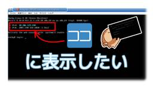

IIJ Engineers Blog
https://eng-blog.iij.ad.jp
IIJ Engineers Blogは、開発・運用の現場から、IIJのエンジニアが技術的な情報や取り組みについて 執筆する公式ブログです。
フィード

IIJのFY2024 新卒の自宅 / 業務環境紹介 Part 2 3
3
IIJ Engineers Blog
【IIJ 2024 TECHアドベントカレンダー 12/19の記事です】 はじめまして、小椋といいます。今年度 (2024年) に入社し、IIJ のクラウドサービス「IIJ GIO」の基盤周りを担当し...
15時間前

IIJのFY2024 新卒の自宅 / 業務環境紹介 Part 1 44
IIJ Engineers Blog
【IIJ 2024 TECHアドベントカレンダー 12/18の記事です】 はじめまして、小椋といいます。今年度 (2024年) に入社し、IIJ のクラウドサービス「IIJ GIO」の基盤周りを担当し...
1日前

SEIL/x86 Ayameで10GbE対応ルータを構築する 2
IIJ Engineers Blog
【IIJ 2024 TECHアドベントカレンダー 12/17の記事です】 SEIL/x86 Ayameをベアメタル環境で動作させるには、トライアルまたはエンタープライズエディションのライセンスが必要で...
2日前

Classifying e-mails using a LLM
IIJ Engineers Blog
In our second article in this blog series, we explored content generation and fine-tuning. Using GPT...
4日前

LLMによる電子メールの分類
IIJ Engineers Blog
【IIJ 2024 TECHアドベントカレンダー 12/16の記事です】 このブログ・シリーズの2回目の記事では、コンテンツの生成と微調整について探りました。GPT-2を使い、精度を高めるためのモデル...
4日前

事故防止のためのターミナル設定 53
IIJ Engineers Blog
【IIJ 2024 TECHアドベントカレンダー 12/15の記事です】 はじめに こんにちは。IIJでメールサービスの運用に従事している芹澤です。 IIJ Engineers Blogでは「運用」を...
4日前

Splunkでメールの配送図を作ろう 3
IIJ Engineers Blog
【IIJ 2024 TECHアドベントカレンダー 12/14の記事です】 はじめに こんにちは、IIJセキュアMXサービスの運用をしているYKRです。初投稿です🔰 サービスの運用をしていると、色々と可...
7日前

Linux で YubiKey 5 を使って TOTP 認証する 44
IIJ Engineers Blog
【IIJ 2024 TECHアドベントカレンダー 12/13の記事です】 近年、Microsoft 365 や Google などを代表する様々な Web サービスをクラウド上で利用できるようになって...
7日前

コンソールのログインプロンプトにIPアドレスを表示する方法 26
IIJ Engineers Blog
【IIJ 2024 TECHアドベントカレンダー 12/12の記事です】 VirtualBoxやVMwareのような仮想環境にLinuxをインストールしたあと、そのままコンソール（tty1）でオペレー...
8日前

チームにも設計書は必須!? チーム設計に欠かせない3つの観点
IIJ Engineers Blog
【IIJ 2024 TECHアドベントカレンダー 12/11の記事です】 システムを運用していく際、非機能要件を設計し、設計書として残すことは当たり前の手順です。 その設計に従い、システムを保守・改善...
9日前